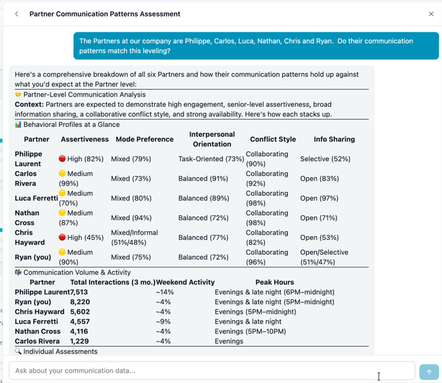
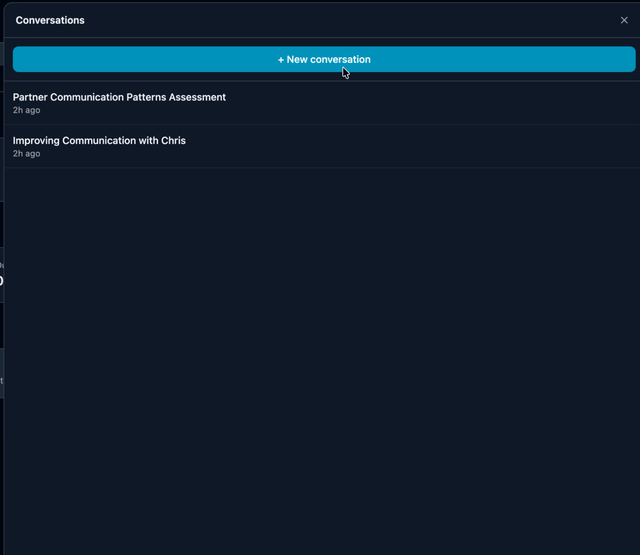
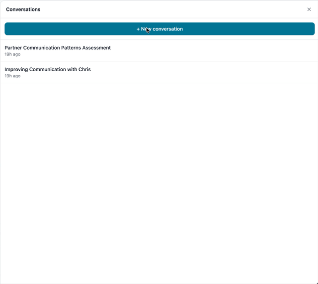

AI Chat
Ask your data anything
Have a natural conversation with CommSense about your communication patterns. Ask about specific relationships, request coaching advice, or get real-time analysis — powered by AI that understands your full communication context.



